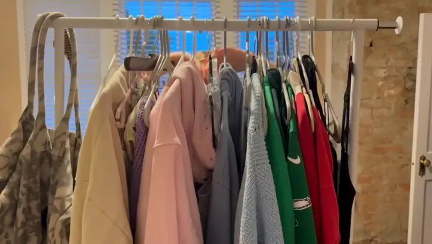

Color guide · For Tulane students and New Orleans chapters
Where can I get a color analysis in New Orleans?
You can get a free personal color analysis in New Orleans from The Color Code, which five Tulane University students run. You don't need an appointment: you take it on your own phone, with an optional selfie and seven quick questions, and you get your color season, eight colors to wear, three to skip and your lip, blush and eye shades in about a minute. If you want to do it as a group, we run chapter color nights for Tulane sororities, and during our pilot your chapter's first one is free. To book one, message us on Instagram at @thecolorcode.collective.
Start your free analysis → Plan a chapter color night →

What you get, in numbers
- $0 during our Tulane pilot, for you and for your chapter's first color night.
- About 1 minute from first question to your result. With a selfie, Bella, our AI color analyst, reads your photo in about 15 seconds.
- 7 questions about your veins, jewelry, sun, hair, eyes, white or ivory, and bold or soft colors.
- 12 seasons, each with 8 colors to wear, 3 to skip, 2 lip, 2 blush and 3 eye shades.
- 0 photos kept. Your selfie is optional, used once and deleted as soon as your result is back. No one on our team ever sees it.
Chapter color nights for Tulane sororities
A color night is a sisterhood event where every member finds her season on her own phone and your chapter sees who shares a season, which is handy before formal and bid day photos. Nobody downloads an app from the App Store, and the selfie is optional for every member. Joely and Sofia, who work with Panhellenic, set it up with you. Send us your chapter, your date and roughly how many members on Instagram, and see how a chapter color night works.
How this is different from an in-person draping session
We don't drape fabric in a studio. The Color Code is built to be fast and free on your phone: our season rules weigh your answers and, if you add one, what Bella reads in your selfie. If you have already had a draping session, you can compare its result with ours; our team member Whitney had her own colors analyzed in Korea, and that experience is part of why we built this. Read how our analysis works or who we are.